Projects
A collection of my work in robotics, electronics, and engineering systems.
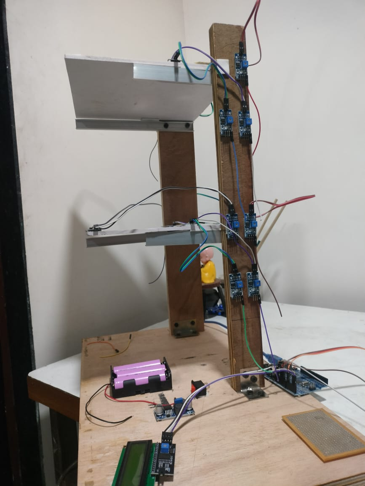
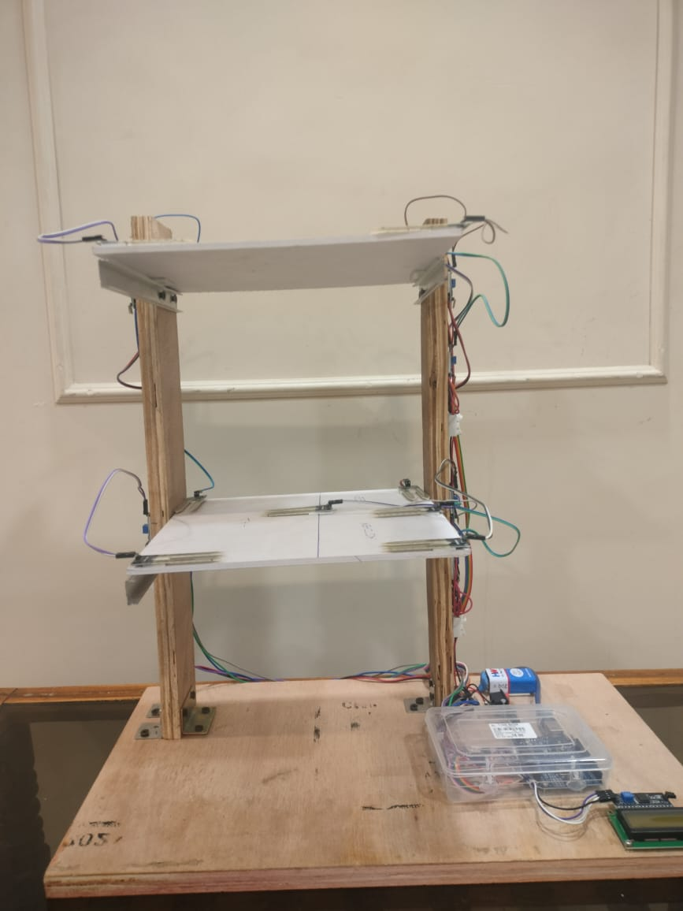
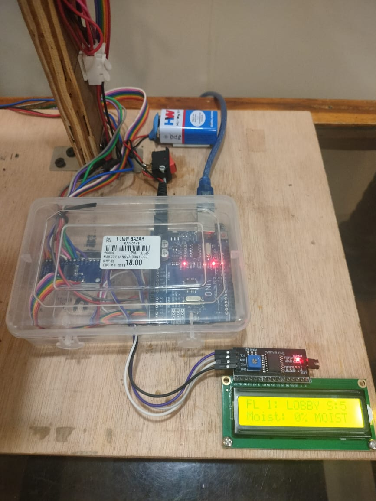
1. IoT-Based Structural Leakage Monitoring System
An IoT-enabled system designed for civil engineering applications that detects water leakage in structures. It monitors moisture levels and can help in early identification of structural damage, improving maintenance efficiency.

2. Edge Detection & Avoidance Robot
A mobile robot equipped with IR sensors that detects edges (like table boundaries) and prevents falls. It intelligently reverses and changes direction when no surface is detected.

3. Basic Line Follower Robot (Non-PID)
A simple line-following robot using four IR sensors and conditional logic. It adjusts movement (left/right/forward) based on sensor inputs without advanced control algorithms.

4. PID-Based Line Follower Robot
An advanced line follower that uses PID (Proportional-Integral-Derivative) control for precise navigation. It ensures smoother, faster, and more stable tracking compared to basic logic-based systems.

5. Wireless Controlled Claw Robot
A remotely operated robotic vehicle with a claw mechanism, controlled via a smartphone using Bluetooth or Wi-Fi. It enables real-time object pickup and movement.

6. EMG-Based Stress Detection System
A bio-sensing device that uses EMG (Electromyography) signals to monitor muscle activity. When stress levels exceed a threshold, it triggers an LED alert.

7. Algorithmic Pattern Generator (Python/Block Coding)
A creative coding project that generates visually appealing patterns using Python or block-based programming. Demonstrates logic building and computational creativity.

8. Portable USB-Powered Water Fountain (3D Printed)
A compact, aesthetically designed fountain powered via USB. Fully 3D printed, it produces soothing water sounds and is easy to carry.
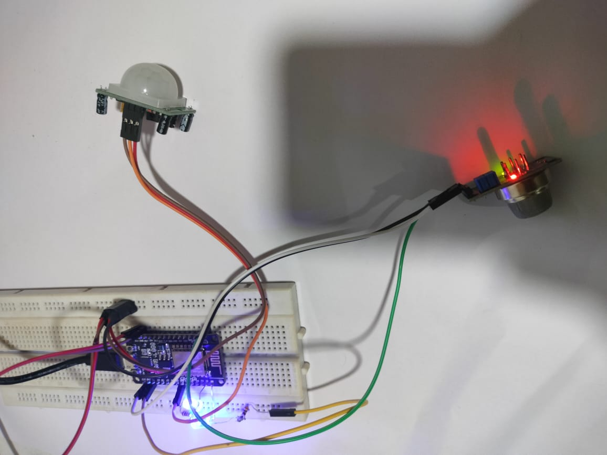
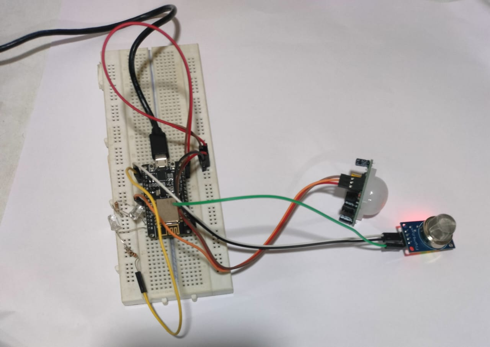
9. IoT-Based Motion & Gas Detection Alert System
Built using NodeMCU ESP8266 and integrated with Blynk, this system detects motion and gas levels, sending real-time alerts and monitoring data remotely.

10. Automatic Waste Segregation System (Dry & Wet)
An Arduino-based system that uses ultrasonic and moisture sensors to classify waste. A servo mechanism automatically directs waste into appropriate bins, promoting smart waste management.
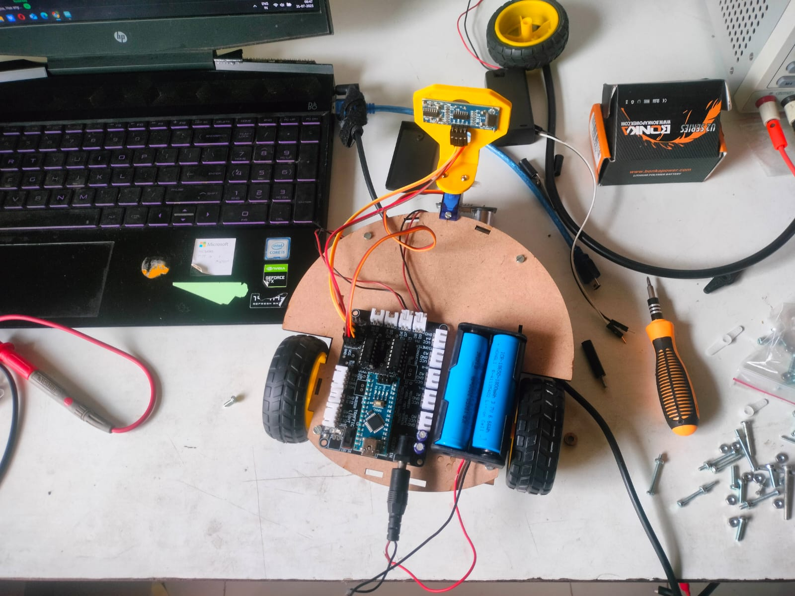
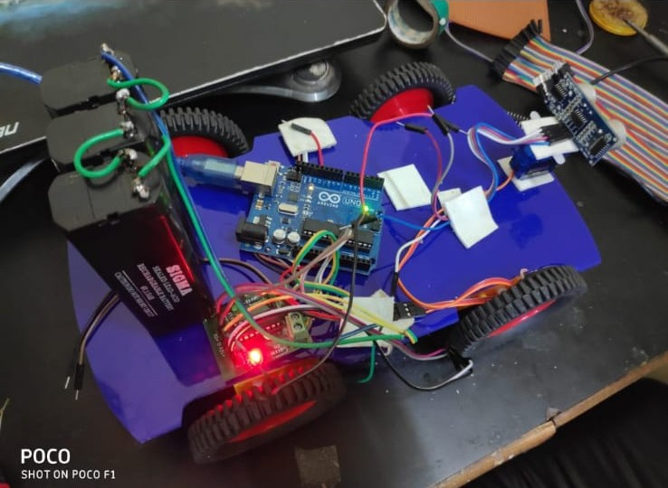
11. Autonomous Obstacle Avoiding Robot Car
A 2WD and 4WD robotic car that uses ultrasonic sensors to detect obstacles and autonomously navigate around them by controlling motor direction.
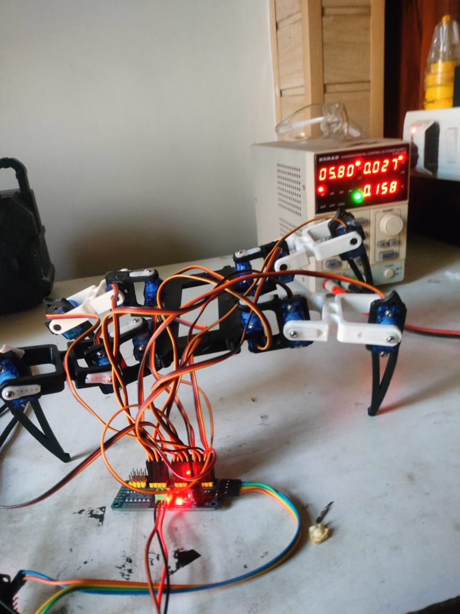
12. 4 Leg spider robot
A 4 leg spider robot driven by 12 servos, with brain behind as esp 32 microcontroller.
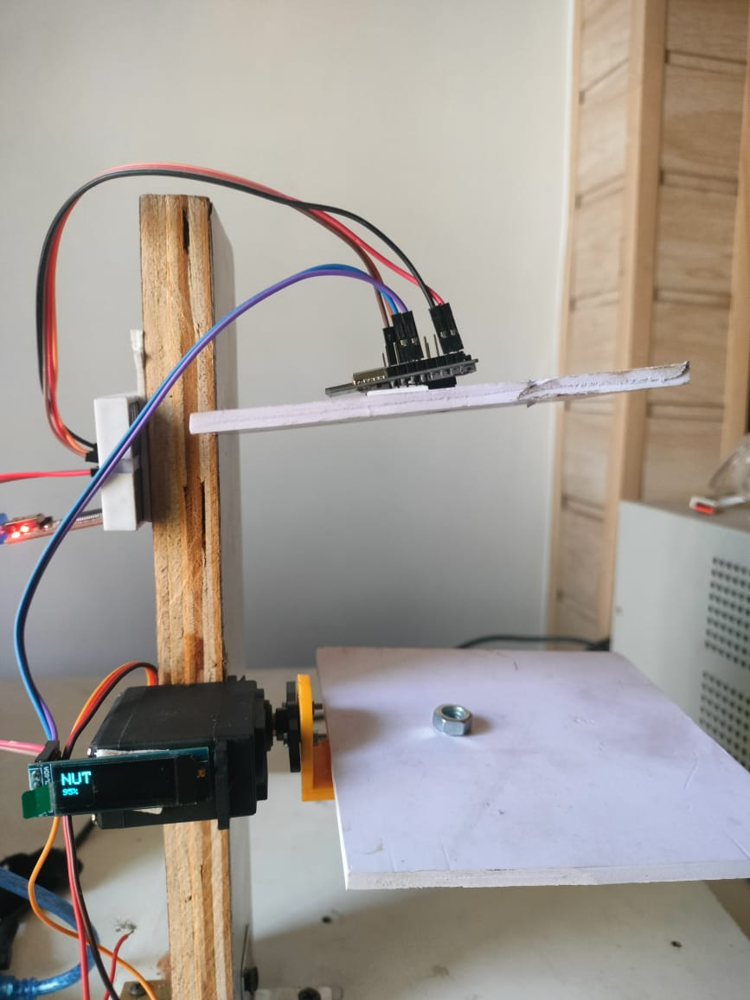
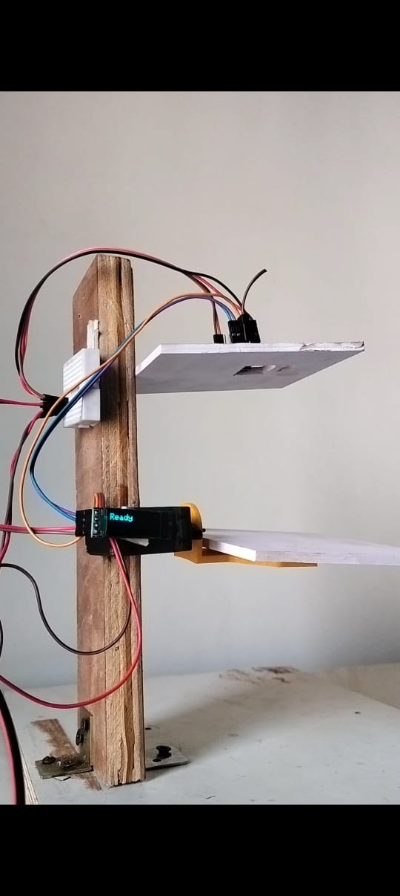
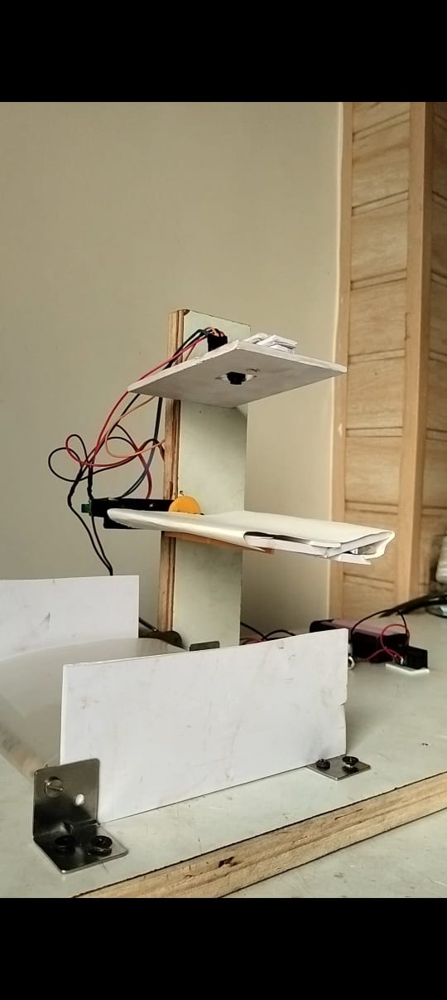
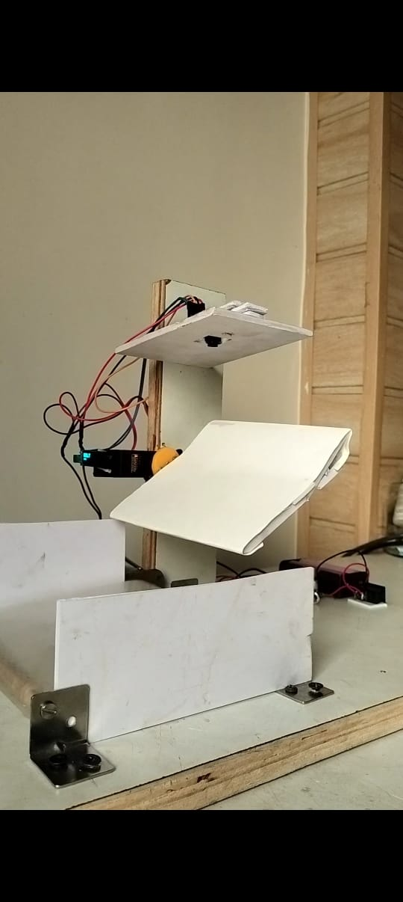
13. EDGE AI Based nut and bolt separation system.
EDGE AI Based nut and bolt separation system is great.
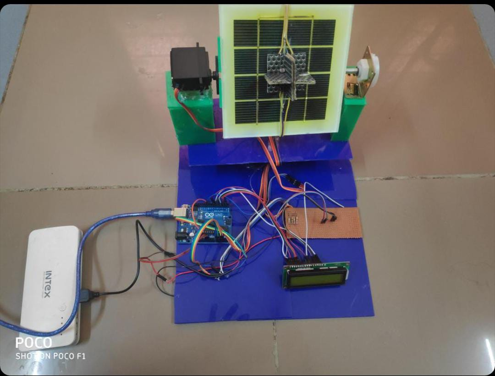


14. 3D solar tracker
three dimensional solar tracker.